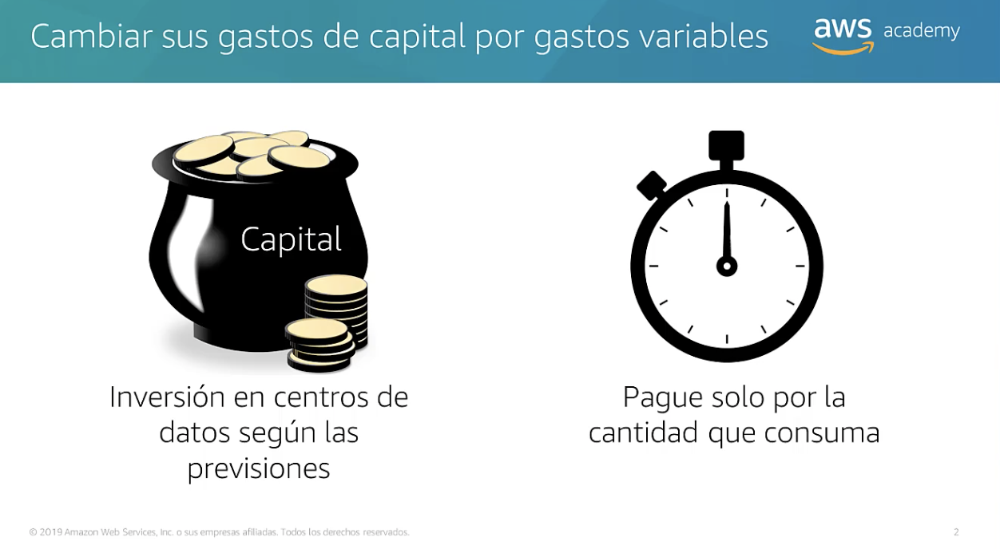

La computación en la nube permite acceder a recursos tecnológicos alojados en infraestructura remota.
Tres conceptos principales:
aprovisionamiento de recursos/servicios tecnológicos bajo un esquema bajo demanda
a través de una red (internet)
bajo un esquema pago por uso
Modelos de Servicio en la Nube:
IaaS: infraestructura como servicio: permite aprovisionar recursos tecnológicos, por ejemplo, un servidor virtual
PaaS: Plataforma como servicio, me otorga una plataforma de alguna solución tecnológica, por ejemplo me brinda herramientas como base de datos, API etc etc
SaaS: Software como servicio, por ejemplo el gmail, outlook, utilizado por usuarios finales
Modelos de Implementación.
Nube Pública: se despliega y yo puedo acceder a través de internet desde cualquier región geográfica
Nube Privada: (soberanía de los datos: hay políticas que los datos no salgan del país) se despliega y yo puedo acceder a través de INTRANET pero solo dentro de una región geográfica y de una empresa, un ejemplo AWS outposts
Nube Híbrida: mezcla de pública y privada dependiendo de los intereses del cliente
Nube Comunitaria: servidores, almacenamiento, aplicaciones y servicios— que son gestionados de manera conjunta por un grupo de usuarios con intereses alineados.
Ventajas:
CAPEX (Gasto de Capital - Capital Expenditure):
Inversión en la adquisición o mejora de activos de largo plazo para expandir el negocio.
Se registra en el balance general y su costo se deprecia o amortizar gradualmente en varios años.
OPEX (Gasto Operativo - Operational Expenditure):
Costos continuos y recurrentes del día a día necesarios para mantener la operación en marcha.
Se deduce por completo en el estado de resultados dentro del mismo período fiscal en que ocurre.
1. Cambiar gastos de capital por gastos variables

2. Economías de escala
3. Obtener recursos bajo demanda
Obtener recursos bajo demanda
4. Aumentar la velocidad y la agilidad
5. Reducir la operación y el mantenimiento de centros de datos
EC2 (Amazon Elastic Compute Cloud): Servicio de computación en la nube que permite crear y administrar servidores virtuales (llamados instancias) bajo demanda con capacidad de cómputo escalable.
Nombre completo: Amazon Elastic Compute Cloud.
Función principal: Permite aprovisionar máquinas virtuales en minutos con la configuración que elijas de CPU, memoria RAM, almacenamiento y sistema operativo (Linux, Windows, etc.).
Elasticidad: Puedes aumentar o reducir la potencia y cantidad de servidores según el tráfico o la demanda de tu aplicación.
Modelo de cobro: Pago por uso (por segundo o por hora), convirtiendo los costos de infraestructura física (CAPEX) en gastos operativos variables (OPEX).
Los AMIs (Amazon Machine Image): son imágenes de máquina virtual preconfiguradas que incluyen el sistema operativo y el software necesario para lanzar instancias en la nube. Sirven como plantillas reutilizables para desplegar servidores idénticos de forma rápida y consistente.
Instancias: Son entornos virtuales o físicos donde se ejecutan las cargas de trabajo, definidos por la conformación de la familia (tipo de hardware) y el tamaño (capacidad de recursos).
La conformación determina cuántos recursos (CPU, memoria) se asignan según la familia y el tamaño elegido.
Familia: Define el tipo de procesador y la cantidad de memoria que tendrá la instancia, agrupando configuraciones según el caso de uso (cómputo, memoria, propósito general).
Cada familia ofrece perfiles específicos de CPU y RAM para optimizar rendimiento y costo.
Pares de claves: Son el mecanismo de autenticación basado en criptografía asimétrica, donde se crean una llave pública y una privada para acceder a las instancias.
La llave pública se instala en la instancia y la privada la guarda el usuario para autenticarse de forma segura sin contraseña.
GP e IO — aclaración: En el apartado de almacenamiento, gp2/gp3 e io1/io2 son tipos de volúmenes EBS, no familias de instancias EC2.
Los volúmenes de propósito general sirven para cargas variadas; los de IOPS aprovisionadas se orientan a cargas que requieren rendimiento de entrada/salida consistente.
VPC ID: Es el identificador único que AWS asigna a una Virtual Private Cloud, es decir, una red lógica aislada dentro de la nube donde despliegas tus recursos (servidores, bases de datos, etc.). Sirve para referenciar esa red específica en configuraciones, APIs y otros servicios.
Security Groups:
Son firewalls virtuales que controlan el tráfico de entrada y salida (se configuran) de tus instancias (como EC2), permitiendo solo los puertos, protocolos y orígenes que definen. Son stateful: si permites una conexión de entrada, la respuesta sale automáticamente sin regla adicional.
Regla de entrada (Inbound): Define qué tráfico externo puede llegar a tu instancia, indicando protocolo, puerto y origen; por ejemplo, SSH (TCP puerto 22) permite conectarte de forma remota a un servidor Linux, idealmente restringido a tu IP.
Regla de salida (Outbound): Define qué tráfico puede salir de tu instancia hacia otros destinos (internet, otras redes o servicios); por defecto en AWS permite todo el tráfico saliente. La regla de salida que se crea por defecto es la de internet
Ampliación de clase — 2026-11-12
Última actualización: 2026-11-17
Stateful y stateless
Control
Comportamiento
Tráfico de respuesta
Security Group
Stateful: sigue el estado de las conexiones.
La respuesta de una conexión permitida se autoriza automáticamente.
Network ACL
Stateless: evalúa entrada y salida por separado.
Deben permitirse ambos sentidos, incluidos los puertos de retorno necesarios.
Permitir NFS desde otro Security Group
En el grupo del destino de montaje EFS, permite entrada TCP 2049 con el grupo de EC2 como origen. En EC2, permite la salida correspondiente. La referencia al grupo evita enumerar individualmente las IP de las instancias asociadas; también deben cumplirse las rutas y los demás controles de red.
0.0.0.0/0 abarca todas las direcciones IPv4. Una regla así no crea por sí sola acceso desde Internet: también depende de la conectividad. En este taller, restringe SSH a tu IP y NFS al grupo de EC2.
Las “instrucciones” son comandos automáticos (bash o cloud-config) como instalar paquetes, crear usuarios o levantar servicios, para que la instancia se configure sola.
cloud-init.log (/var/log/cloud-init.log): Registro detallado de los eventos internos de cloud-init, el servicio que ejecuta la configuración inicial de la instancia; sirve para diagnosticar qué etapas se ejecutaron y cuáles fallaron.
cloud-init-output.log (/var/log/cloud-init-output.log): Captura la salida estándar y los errores de los comandos de tu script de User Data; es el primero que se revisa para depurar fallos del script.
Mecanismos de acceso e interacción con AWS (o Herramientas de gestión e interfaces de AWS)
AWS Web (Consola de administración): Interfaz gráfica accesible desde cualquier navegador para configurar y supervisar tus recursos visualmente. Es ideal para tareas exploratorias, monitoreo en tiempo real y administraciones manuales sin tocar la terminal.
AWS CLI por consola: Herramienta que permite interactuar con los servicios de AWS ejecutando comandos directos en la terminal. Permite automatizar despliegues por medio de scripts y ejecutar operaciones repetitivas con rapidez.
--image-id: Sistema operativo que usará el servidor (ID de la AMI).
--instance-type: Capacidad de hardware (CPU y RAM, ej. t3.micro).
--key-name: Nombre de tu clave SSH registrada en AWS (sin extensión .pem).
--count: Número de servidores que se van a crear.
SDK (Software Development Kit): Conjunto de librerías para lenguajes específicos (Python, Node.js, Java) que integra AWS dentro de tus programas. Facilita que tus aplicaciones se conecten, envíen datos o controlen la infraestructura desde su propio código.
Terraform es una herramienta de código abierto de Infraestructura como Código (IaC) creada por HashiCorp. Permite definir, crear, actualizar y eliminar (CRUD) recursos en la nube mediante archivos de configuración (extensión .tf, normalmente con main.tf como archivo principal) de manera declarativa: defines tus intenciones (el estado deseado), no el paso a paso manual.
1. ¿Cómo funciona internamente?
En lugar de entrar a la consola web de AWS y hacer clic para crear servidores o firewalls, escribes archivos .tf en lenguaje HCL (HashiCorp Configuration Language). Terraform se comunica con las APIs de AWS mediante un plugin llamado Provider y registra todo lo que crea en un archivo de estado.
Flujo interno de Terraform: código HCL, Provider AWS, API real y archivo de estado.
Archivos especiales que genera Terraform
Archivo / Carpeta
¿Para qué sirve?
¿Se sube a Git?
*.tf (main.tf, variable.tf, outputs.tf)
Código fuente HCL. Terraform lee todos los .tf del directorio como un único conjunto.
Sí
.terraform/
Carpeta oculta donde terraform init descarga el plugin del proveedor (ej. hashicorp/aws).
No
.terraform.lock.hcl
Archivo candado que fija la versión exacta del proveedor para despliegues reproducibles.
Sí (recomendado)
terraform.tfstate
Archivo de estado. Mapea tu código con los recursos reales en AWS (IDs, IPs, etc.). Permite saber qué actualizar o destruir.
No (puede contener datos sensibles)
terraform.tfstate.backup
Respaldo automático del estado inmediatamente anterior al último cambio.
No
2. Anatomía del código HCL (Bloques fundamentales)
2.1 Bloque provider (Proveedor)
Define con qué nube o plataforma se conecta Terraform y en qué región operará.
provider "aws" {
region = "us-east-1"
}
"aws": nombre del proveedor oficial de Amazon Web Services.
region: región geográfica de despliegue (us-east-1 = Norte de Virginia).
2.2 Bloque resource (Recurso)
Es el bloque principal. Cada resource declara un objeto real de infraestructura en AWS (una instancia EC2, un Security Group, una regla de red, etc.).
Tipo de recurso (<TIPO_DE_RECURSO>): Definido por el proveedor AWS (no se puede inventar). Indica qué servicio de AWS se creará (aws_instance, aws_security_group, etc.).
Nombre local (<NOMBRE_LOCAL>): Lo eliges libremente. Solo existe dentro de Terraform para referenciar el recurso desde otros bloques (ej. mi_instancia, mi-sg).
Nombre en AWS (name o tags.Name): Es el argumento interno que define cómo aparecerá el recurso en la consola web de AWS.
Tipos de resource usados en los talleres de clase
Tipo de recurso
Servicio AWS
¿Para qué sirve?
aws_security_group
EC2 / VPC
Crea un firewall virtual que agrupa reglas de tráfico entrante y saliente.
aws_vpc_security_group_ingress_rule
EC2 / VPC
Crea una regla de entrada desacoplada y la vincula a un Security Group (práctica recomendada por AWS).
aws_vpc_security_group_egress_rule
EC2 / VPC
Crea una regla de salida desacoplada y la vincula a un Security Group.
aws_instance
EC2
Aprovisiona una máquina virtual (instancia EC2) con AMI, tamaño, llave SSH y red.
2.3 Bloque variable (Variables de entrada)
Permite parametrizar el proyecto para evitar valores fijos (hardcoded) en main.tf y reutilizar la misma infraestructura cambiando solo parámetros.
variable "cantidad_instancias" {
description = "Cantidad de instancias"
type = number
default = 2
}
Campo
Obligatorio
¿Para qué sirve?
"nombre"
Sí
Identificador de la variable. Se lee en el código como var.<nombre> (ej. var.cantidad_instancias).
description
No (recomendado)
Documenta qué valor representa la variable.
type
No (recomendado)
Restringe el tipo de dato: string, number, bool, list(...), map(...), etc.
default
No
Valor por defecto. Si se omite, Terraform lo pedirá por terminal al ejecutar plan o apply.
Tip: Puedes sobrescribir cualquier variable desde la terminal sin editar archivos: terraform apply -var="cantidad_instancias=3".
2.4 Bloque output (Salidas)
Expone en la terminal valores generados por AWS al terminar el despliegue (IDs, IPs públicas, zonas de disponibilidad) sin tener que buscarlos manualmente en la consola web.
output "ip_publica_instancias" {
description = "Direcciones IP públicas de las instancias creadas"
value = aws_instance.mi_instancia-efs[*].public_ip
}
Campo
Obligatorio
¿Para qué sirve?
"nombre"
Sí
Nombre con el que se imprimirá la salida en terminal.
description
No
Explica qué información devuelve la salida.
value
Sí
Atributo o expresión de los recursos que se quiere mostrar.
2.5 Expresiones y conceptos clave en HCL
Referencias y dependencias implícitas: Al escribir vpc_security_group_ids = [aws_security_group.mi-sg.id], Terraform detecta automáticamente que primero debe crear el Security Group y luego la instancia EC2, sin definir el orden a mano.
Meta-argumento count e interpolación ${...}: Con count = var.cantidad_instancias, Terraform crea N copias del recurso usando un índice count.index que inicia en 0. Al escribir "Mi instancia EFS - ${count.index + 1}", genera nombres numerados (1, 2, ...).
*Expresión Splat ([*]):* Cuando un recurso usa count, se convierte en una lista. La sintaxis aws_instance.mi_instancia-efs[*].public_ip recorre todas las instancias y extrae una lista con el atributo public_ip de cada una.
Funciones nativas (length()):length(aws_instance.mi_instancia-efs) devuelve cuántos elementos fueron creados en esa lista de instancias.
3. Guía de comandos en terminal (Ciclo de vida)
Todos los comandos de Terraform se ejecutan dentro de la carpeta del proyecto que contiene los archivos .tf.
Ciclo de vida de los comandos en terminal desde la autenticación hasta la destrucción.
Configurar credenciales de AWS
aws configure
Guarda AWS Access Key ID, AWS Secret Access Key, región (us-east-1) y formato (json). En AWS Academy / Learner Lab recuerda incluir también el aws_session_token en ~/.aws/credentials.
Inicializar el proyecto (primera vez o al agregar proveedores)
terraform init
Descarga el plugin del proveedor AWS en .terraform/ y crea .terraform.lock.hcl.
Formatear y validar sintaxis (sin tocar AWS)
terraform fmt
terraform validate
fmt indenta y ordena el código automáticamente; validate verifica que la sintaxis HCL y las referencias sean válidas.
Previsualizar el plan de ejecución
terraform plan
Compara tus .tf contra terraform.tfstate y AWS. Símbolos del plan:
+ (create): se creará un recurso nuevo.
~ (update in-place): se modificará sin destruirlo.
- (destroy): se eliminará.
-/+ (replace): se destruirá y recreará (ej. al cambiar la AMI de una EC2).
Aplicar los cambios en AWS
terraform apply
Muestra el plan, pide confirmación (yes), crea los recursos en AWS, actualiza terraform.tfstate e imprime los outputs. (Con -auto-approve omite la confirmación manual).
Inspeccionar el despliegue actual
terraform output
terraform state list
terraform show
output vuelve a mostrar las salidas (como IPs públicas); state list enumera los recursos gestionados; show muestra todos los atributos guardados en el estado.
Destruir la infraestructura al terminar el laboratorio
terraform destroy
Elimina todos los recursos registrados en el estado respetando el orden inverso de dependencias. Es fundamental ejecutarlo al terminar cada práctica para evitar costos o consumo de créditos.
Persistente: Es un almacenamiento que perdura en el tiempo
Storage EC2:
Amazon EBS (Elastic Block Store), servicio de almacenamiento persistente por bloques independientes que trabajan en conjunto
gp3 o gp2 (propósito general; gp3 corresponde a la tercera generación): se usa para cualquier cosa, para ámbitos generales
io1 e io2 (input-output de primera o segunda generación): tipos de volúmenes de alto rendimiento por ejemplo para instalar recursos como base de datos ejemplo un CRUD, optimizada para la escritura y lectura
Amazon EFS (Elastic File System), servicio administrado, permite varias instancias almacenen de manera compartida sobre este sistema de almacenamiento de red a través del protocolo NFS.
NFS (Network File System o Sistema de Archivos de Red) es un protocolo distribuido de nivel de aplicación basado en la arquitectura cliente-servidor, que permite a un equipo acceder, leer y escribir archivos y directorios remotos a través de una red IP como si estuvieran almacenados en su propio disco local.
Network es un punto de acceso a cada una de las zonas de disponibilidad
No Persistente: (Efímero) es volátil mientras el proceso está en ejecución existe y si se termina también se termina o borra ese almacenamiento
Recuerda tenemos que montar un disco cuando colocamos un nuevo disco en el servidor
Ampliación de clase — 2026-11-12
Última actualización: 2026-11-17
EBS frente a EFS
Aspecto
EBS
EFS
Tipo
Almacenamiento en bloques.
Sistema de archivos compartido.
Uso en el taller
Volumen de 10 GiB de la instancia 1, montado en /disco2.
Mismo sistema de archivos montado en /efs1 de las dos instancias.
Preparación
Identificar el volumen; formatear solo si está vacío y sin sistema de archivos.
Instalar amazon-efs-utils y montar por red con TLS.
Acceso
Volumen dedicado en este ejercicio; Multi-Attach es una opción específica de io1/io2.
Varios clientes acceden a los mismos archivos mediante NFS.
NFS y archivos compartidos
NFS permite montar un sistema de archivos remoto como un directorio local. Para EFS, la conectividad NFS utiliza TCP 2049. Leer desde la segunda instancia el archivo escrito en la primera verifica acceso al mismo almacenamiento, no una copia sincronizada entre discos.
Elasticidad y disponibilidad
EFS administra la infraestructura y ajusta el almacenamiento a los archivos guardados. La facturación puede incluir otros componentes además de capacidad. EFS Regional guarda datos en varias zonas de disponibilidad; EFS One Zone usa una sola. No todos los sistemas EFS tienen la misma distribución entre zonas.
Antes de formatear, identifica el dispositivo correcto con lsblk -f. El comando mkfs elimina datos del volumen seleccionado. Los nombres de dispositivo pueden variar entre instancias.
Para qué sirve: Inicia una sesión remota segura por SSH hacia la instancia utilizando tu archivo de llave privada (.pem).
2. Inspección de discos disponibles
Listar dispositivos de bloque y tamaños
lsblk
Para qué sirve: Muestra los discos y particiones conectados al servidor con su tamaño (20G en xvda y 10G en xvdb), tipo y punto de montaje.
Verificar sistemas de archivos y UUID
lsblk -f
Para qué sirve: Lista los dispositivos junto con su tipo de sistema de archivos (FSTYPE), identificador UUID y espacio disponible. Permite comprobar que el disco nuevo (xvdb) está vacío y sin formato.
Consultar metadatos del nuevo disco
sudo blkid /dev/sdb
Para qué sirve: Consulta el UUID y formato del disco /dev/sdb. Al estar recién creado, no devuelve información.
3. Formateo y montaje del nuevo volumen
Crear el directorio de montaje
sudo mkdir -p /disco2
Para qué sirve: Crea la carpeta /disco2 con permisos de administrador, la cual funcionará como punto de montaje para acceder al disco.
Formatear el volumen con sistema de archivos XFS
sudo mkfs -t xfs /dev/sdb
Para qué sirve: Formatea el disco /dev/sdb asignándole el sistema de archivos XFS(sin este paso previo, mount arroja error de superbloque/formato inválido).
Montar el disco en el sistema
sudo mount /dev/sdb /disco2
Para qué sirve: Vincula el disco ya formateado dentro de /disco2 para que el sistema operativo pueda leer y escribir en él.
4. Verificación y prueba de escritura
Comprobar espacio disponible y tipo de formato
df -hT
Para qué sirve: Muestra el espacio libre y usado de todos los discos en formato legible (GB/MB) junto con su sistema de archivos (xfs), confirmando que /disco2 está activo (reemplaza a df y corrige el error de escritura df -ht).
Crear un archivo de prueba en el volumen
echo "texto de prueba" | sudo tee /disco2/prueba.txt
Para qué sirve: Crea el archivo prueba.txt dentro del nuevo disco con permisos de administrador y escribe una línea de texto para validar la escritura.
Leer el archivo creado
cat /disco2/prueba.txt
Para qué sirve: Muestra en pantalla el contenido de prueba.txt para confirmar que los datos se guardaron correctamente.
Verificación final de montaje y formato
lsblk -f
Para qué sirve: Comprueba que xvdb ya cuenta con formato xfs, un UUID propio asignado y punto de montaje activo en /disco2.
Aprovisionar y configurar almacenamiento en bloque dedicado (Amazon EBS) y almacenamiento de archivos en red compartido (Amazon EFS) sobre instancias Amazon Linux 2023, aplicando reglas de seguridad mediante Security Groups y validando el acceso a los mismos archivos desde dos servidores EC2.
2. Conceptos Clave
Amazon EBS (Elastic Block Store): Almacenamiento en bloques. En este taller se utiliza un volumen dedicado a la primera instancia. Solo se formatea si es nuevo y no contiene un sistema de archivos; existen configuraciones Multi-Attach para determinados volúmenes io1/io2.
Amazon EFS (Elastic File System): Sistema de archivos en red administrado basado en el protocolo NFSv4 (puerto TCP 2049). Permite que múltiples instancias EC2 lean y escriban los mismos archivos al mismo tiempo y crece automáticamente.
Security Group (Stateful): Firewall virtual con memoria (si permite entrar tráfico, deja salir la respuesta). Por seguridad, el EFS no se abre al mundo (0.0.0.0/0), sino únicamente al Security Group de las instancias EC2.
3. Fase 1: Configuración en la Consola Web de AWS
A. Configurar los Security Groups (VPC / EC2)
Security Group para las instancias EC2 (sg-ec2):
Regla de entrada: Puerto 22 (SSH) desde tu IP pública actual (/32) para conectarte por terminal.
Security Group para el EFS (sge-efs-ae):
Regla de entrada: Tipo NFS (Puerto TCP 2049) poniendo como Origen el ID del Security Group de tus EC2 (sg-ec2).
B. Lanzar las dos instancias EC2 (Amazon Linux 2023)
Instancia 1 (Principal):
Seleccionar Amazon Linux 2023, tipo t3.micro y tu par de claves (.pem).
En Configuración de red, elegir la VPC por defecto y asignar sg-ec2.
En Configurar almacenamiento, mantener el disco raíz (8 GiB) y hacer clic en Agregar nuevo volumen para añadir un disco EBS de 10 GiB.
Instancia 2 (Secundaria):
Lanzar una segunda instancia Amazon Linux 2023 en la misma VPC, con el mismo Security Group (sg-ec2) y la misma llave .pem.
C. Crear el Sistema de Archivos EFS
Ir al servicio Amazon EFS en la consola de AWS y hacer clic en Crear sistema de archivos.
Asignar un nombre, seleccionar la misma VPC de las instancias EC2 y hacer clic en Personalizar.
En el paso de Acceso a la red, reemplazar el Security Group por defecto de cada Zona de Disponibilidad por el grupo sge-efs-ae (puerto 2049 abierto).
Finalizar la creación y copiar el ID del sistema de archivos (ejemplo: fs-02d737f8f33137fd6).
Requisitos de red: verifica que existan destinos de montaje EFS disponibles en las zonas usadas por las instancias, que DNS funcione y que las reglas de salida de EC2 permitan TCP 2049 hacia EFS.
4. Fase 2: Formatear y Montar el Disco EBS (10 GB) en Instancia 1
Conéctate por SSH a la Instancia 1 y ejecuta los siguientes comandos:
Identificar el nombre del disco nuevo de 10 GB:
lsblk
lsblk -f
Nota: En instancias t3, los volúmenes se presentan como dispositivos NVMe. /dev/nvme1n1 es solo el nombre del ejemplo: confirma el dispositivo y su tamaño con lsblk y el sistema de archivos con lsblk -f antes de continuar.
Crear la carpeta que servirá como punto de montaje:
sudo mkdir -p /disco2
Formatear únicamente el volumen nuevo y vacío con XFS:
mkfs puede destruir los datos existentes. No lo ejecutes sobre el disco raíz ni sobre un volumen que ya contenga datos. Sustituye el dispositivo del ejemplo por el que hayas identificado.
sudo mkfs -t xfs /dev/nvme1n1
Importante: Un volumen nuevo sin sistema de archivos necesita formateo para este uso. Uno restaurado desde una instantánea puede estar ya formateado: no lo vuelvas a formatear.
Montar el disco en la carpeta /disco2:
sudo mount /dev/nvme1n1 /disco2
Comprobar el montaje y realizar prueba de escritura:
df -hT
echo "texto de prueba" | sudo tee /disco2/prueba.txt
cat /disco2/prueba.txt
5. Fase 3: Instalar y Montar Amazon EFS en Instancia 1
En la misma terminal SSH de la Instancia 1:
Instalar la librería oficial de utilidades EFS y crear la carpeta /efs1:
Listar y leer el archivo creado desde la Instancia 1:
ls -la /efs1
cat /efs1/prueba.txt
Escribir desde la Instancia 2 para validar lectura y escritura compartidas:
echo "Hola desde la segunda instancia" | sudo tee -a /efs1/prueba.txt
cat /efs1/prueba.txt
Al ejecutar cat /efs1/prueba.txt nuevamente en la Instancia 1, deben verse ambas líneas tras completar la escritura. Se accede al mismo sistema de archivos; no se sincronizan dos discos locales.
7. Resumen de Comandos Útiles de Verificación
Comando
Función
lsblk -f
Lista discos conectados, formato (xfs), UUID y puntos de montaje.
df -hT
Muestra el espacio usado/disponible en GB/MB y el tipo de sistema (xfs, nfs4).
ls -la /efs1
Lista todos los archivos (incluidos ocultos) y permisos dentro del EFS.
cat /efs1/prueba.txt
Muestra en pantalla el contenido del archivo de texto.
8. Alcance del taller
Los comandos realizan montajes manuales. Para volver a montar automáticamente después de un reinicio se requiere una configuración adicional, como /etc/fstab. Un montaje manual no implica que los datos almacenados se borren al reiniciar.
Análisis práctico del repositorio de código Aryy234/cloud-u1-ps-ae, mostrando la evolución real entre taller8-ae2 (despliegue básico en un solo archivo) y taller12-efs-ae (arquitectura modular con variables, outputs, count y reglas de red entre Security Groups para Amazon EFS).
1. Taller 8 (taller8-ae2): EC2 y Security Group básico
Archivo:taller8-ae2/main.tfObjetivo: Primer despliegue en AWS con Terraform creando 1 instancia EC2 y 1 Security Group con reglas embebidas (inline) y valores fijos.
Arquitectura del Taller 8 (taller8-ae2): 1 instancia EC2 con Security Group de reglas embebidas.
A. Recurso aws_security_group — Nombre local: mi-sg
Campo
Valor en el proyecto
¿Para qué sirve?
name
"mi-security-group-terraform"
Nombre visible del Security Group en la consola de AWS.
Permite tráfico saliente únicamente por el puerto 80 TCP.
Observación técnica (egress en Taller 8): Al permitir salida solo por el puerto 80, la instancia no podría resolver DNS (puerto 53) ni descargar paquetes por HTTPS (puerto 443). En Terraform, a diferencia de la consola de AWS, no se crea automáticamente la regla de "toda salida" cuando defines egress manualmente. Esto se corrige en el Taller 12.
B. Recurso aws_instance — Nombre local: mi_instancia
Campo
Valor en el proyecto
¿Para qué sirve?
ami
"ami-0c230065b91270bc6"
Imagen del sistema operativo (AMI) que usará el servidor.
instance_type
"t2.micro"
Capacidad de hardware virtual (vCPU y RAM).
key_name
"mi-primera-llaves-ae"
Nombre del par de llaves SSH registrado en AWS para iniciar sesión.
tags
{ Name = "MiInstanciaTerraForm2" }
Etiqueta que asigna el nombre visible de la instancia en EC2.
vpc_security_group_ids
[aws_security_group.mi-sg.id]
Vincula el Security Group mediante una referencia dinámica (dependencia implícita).
2. Taller 12 (taller12-efs-ae): Múltiples EC2 y red para Amazon EFS
Archivos:taller12-efs-ae/main.tf, variable.tf y outputs.tfObjetivo: Aplicar buenas prácticas separando archivos, parametrizando con variables, desplegando 2 instancias con count, devolviendo outputs y configurando dos Security Groups comunicados por el puerto NFS 2049.
Alcance actual del código:taller12-efs-ae crea los Security Groups (para EC2 y para EFS) y las 2 instancias EC2, pero todavía no declara el recurso de almacenamiento EFS (aws_efs_file_system ni aws_efs_mount_target). Si el EFS se crea aparte en consola AWS, se asocia al Security Group mi-security-group-terraform-efs generado aquí.
Arquitectura del Taller 12 (taller12-efs-ae): 2 instancias EC2 con Security Groups desacoplados comunicados por NFS (TCP 2049).
A. Archivo variable.tf (Parámetros de entrada)
Variable
Tipo (type)
Valor por defecto (default)
Uso en main.tf
region
string
"us-east-1"
provider "aws" (region)
ami_id
string
"ami-0c230065b91270bc6"
aws_instance (ami)
tipo_instancia
string
"t2.micro"
aws_instance (instance_type)
nombre_llave
string
"mi-primera-llaves-ae"
aws_instance (key_name)
cantidad_instancias
number
2
aws_instance (count)
B. Archivo main.tf (Security Groups, Reglas e Instancias)
1. Security Groups base (sin reglas inline)
aws_security_group.mi-sg-efs-instancias-14 (name = "mi-security-group-terraform-efs-instancias"): protege las instancias EC2 dentro de vpc-09ffffa328714b7dd.
aws_security_group.mi-sg-efs-14 (name = "mi-security-group-terraform-efs"): protege los Mount Targets de EFS en la misma VPC.
Asociada al SG de instancias. Abre tcp puerto 22 desde cidr_ipv4 = "0.0.0.0/0" para acceso SSH.
salida_efs
egress_rule
Asociada al SG de instancias. Permite salida tcp puerto 2049 (NFS) cuyo destino es referenced_security_group_id = aws_security_group.mi-sg-efs-14.id.
salida_internet
egress_rule
Asociada al SG de instancias. Permite salida libre a Internet (ip_protocol = "-1", todos los protocolos y puertos, hacia 0.0.0.0/0) para instalar amazon-efs-utils y actualizaciones.
entrada_efs
ingress_rule
Asociada al SG de EFS. Permite entrada tcp puerto 2049únicamente desde recursos que pertenezcan al SG de instancias (referenced_security_group_id = aws_security_group.mi-sg-efs-instancias-14.id).
¿Por qué el SG de EFS no necesita reglas de salida? Porque los Security Groups de AWS son stateful: al autorizar la entrada desde las EC2 por el puerto 2049, el tráfico de respuesta queda permitido automáticamente.
Mover vpc_id = "vpc-09ffffa328714b7dd" a una variable (o consultar la VPC por defecto con data "aws_vpc" "default" { default = true }).
Por convención estándar de Terraform, el archivo de variables suele nombrarse en plural (variables.tf).
Seguridad SSH en producción:
En laboratorios se suele abrir SSH a 0.0.0.0/0, pero en entornos reales debe restringirse a tu IP pública (<TU_IP>/32) o usar AWS Systems Manager Session Manager.
Nota sobre salida_efs vs. salida_internet:
Como salida_internet permite ip_protocol = "-1" hacia 0.0.0.0/0, ya cubre el tráfico saliente al puerto 2049. Conservar salida_efs es útil a nivel didáctico y protege la arquitectura si luego restringes la salida a Internet.
Siguiente paso lógico en Terraform para EFS:
Declarar aws_efs_file_system y aws_efs_mount_target (asociándole aws_security_group.mi-sg-efs-14.id) para automatizar también el sistema de archivos sin pasar por la consola web.